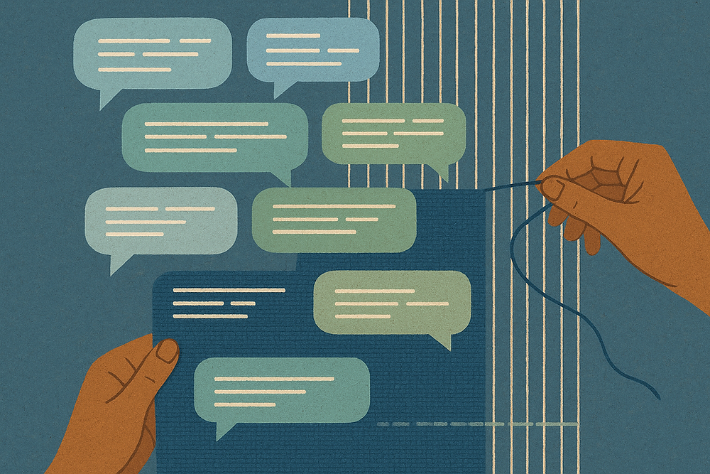

LLMs / Design-in-use / Responsible AI
Designability of LLMs: When Everyday Use Becomes Design
This work-in-progress essay examines how everyday interactions with large language models can become a form of ongoing design, beyond prompt engineering or one-time personalization.
Rather than treating users as passive recipients of model outputs, this project asks how people continually tune, interpret, repair, and redirect LLMs in practice. These small acts of use can be understood as design-in-use: situated, iterative, and shaped by the user's goals, values, and constraints.
The project connects responsible AI with design research by looking at how accountability, agency, and expertise are negotiated in ordinary interactions with AI systems. It is especially interested in what becomes visible when tailoring a model is understood not only as technical optimization, but as a social and interpretive practice.
Current Focus
- How people make sense of LLM behavior through repeated use.
- How tailoring and repair practices redistribute agency between users and AI systems.
- How design-in-use can inform more public-facing approaches to responsible AI.